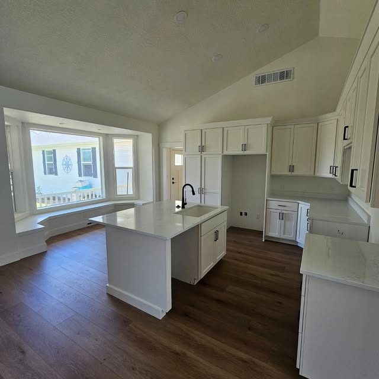

Five pages built to move a homeowner to a quote request.
A five-page site for a custom home, commercial and concrete builder, structured around one conversion and photographed to earn it.
- Role
- Design and front-end build
- Year
- 2025
- Scope
- Website, five pages
- Status
- Live

The brief
Rylee S. Nelson Construction does three quite different things: custom homes, commercial builds and concrete. A homeowner looking for a kitchen and a developer looking for a pour are not the same visitor, but they were arriving at the same front door.
The site needed to hold all three without diluting any of them, and it needed to end in one place: a quote request.
What I did
I split the site into five pages rather than one long scroll, so each service line gets a real page to argue for itself. Every page ends on the same call to action, and the quote request is also the only button in the navigation.
The visual direction leans on the work itself. Twilight exteriors, kitchen interiors and finish detail carry the pages, with a hexagonal RS mark and a tight grotesk doing the structural work around them.
Photography is currently sourced from the company's own Instagram. The layout reserves space for higher-resolution originals, so swapping them in causes no reflow.
Outcome
A five-page site where every route ends at the same conversion, and where each of the three service lines can be linked to directly in a sales conversation.
TODO Jake: add real outcome numbers here when you have them.

Next project
Christian Center of Park City